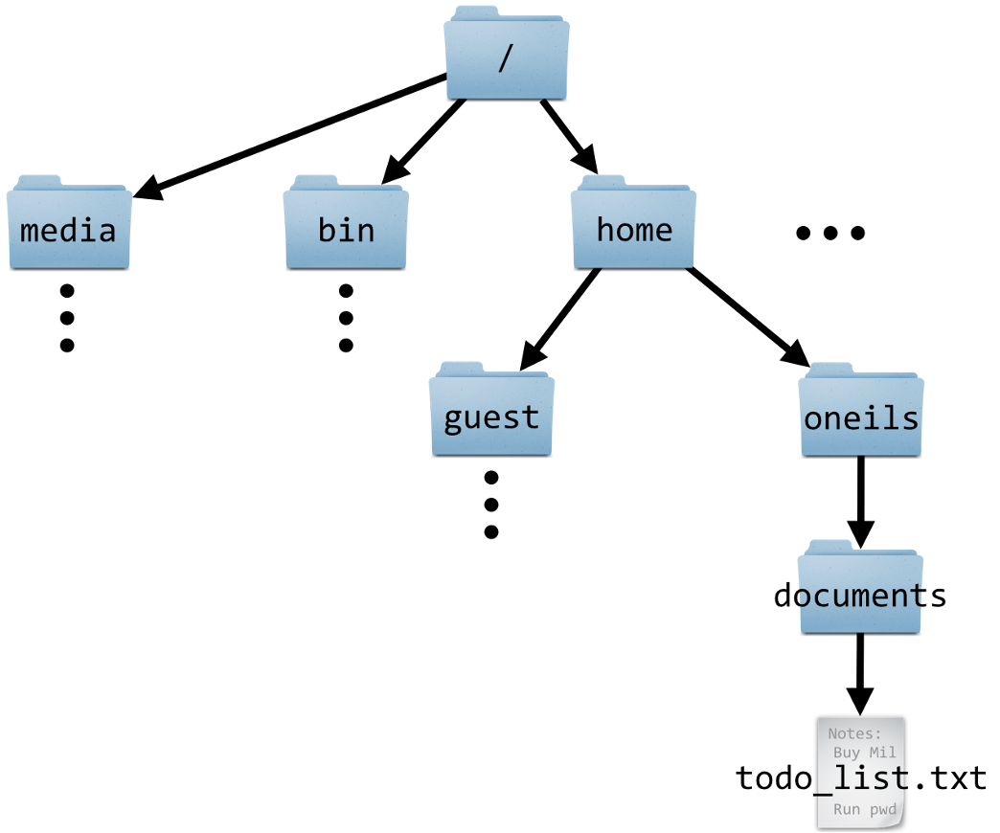
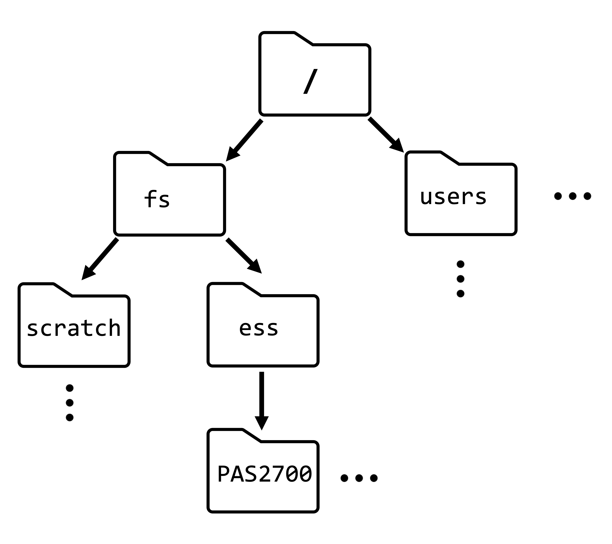
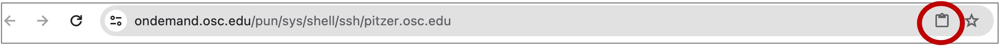

# (Don't run this)
x <- 5
x[1] 5Jelmer Poelstra
September 2, 2025
In this session, you’ll learn:
We can conceptualize Unix (or “Unix-like” / “Unix-based”)1 as a family of operating systems, which includes Linux and Mac but not Windows.
For scientific computing, Unix-based operating systems are generally preferable. Supercomputers, like the Ohio Supercomputer Center (OSC), use Linux. In this course, though, your laptop/desktop can run on any operating system, precisely because we will connect to OSC and do our work there.
While these are clearly not synonyms, in day-to-day computing, they are often used interchangeably.
Instead of a Command-line Interface (CLI), most programs that we use on a day-to-day basis have a Graphical User Interface (GUI), which are operated mostly by pointing and clicking rather than typing.
The Unix shell has been around for a long time and can sometimes seem a bit archaic. But astonishingly, a system largely built decades ago in an era with very different computers and datasets has stood the test of time, and the ability to use it is a crucial skill in applied bioinformatics.
Specifically, you may want to or need to use the Unix shell as opposed to programs with Graphical User Interfaces (GUIs) because of:
But what about versus other coding languages? Why do we need to know the Unix shell on top of R and/or Python?
“Directory” (or “dir” for short) is the term for folder that is commonly used in Unix contexts.
The Unix directory structure is hierarchical, with a single starting point: the root, depicted as /.
A “path” gives the location of a file or directory, in which directories are separated by forward slashes /.
So: a leading / in a path is the root dir, and any subsequent / are used to separate dirs. For example, the path to our OSC project’s dir is /fs/ess/PAS2880. This means: the dir PAS2880 is located inside the dir ess, which in turn is inside the dir fs, which in turn is in the computer’s root directory.
The OSC dir structure is somewhat different from that of a personal computer. Our Home dir is not /home/<username> like in the book and the schematic on the left, but /users/PASXXXX/<username>.


In the above schematic on the left, what is the path to the file todo_list.txt?
The path to the file todo_list.txt is: /home/oneils/documents/todo_list.txt
Clusters dropdown menu in the top bar and select Cardinal Shell Access.Inside your terminal, the “prompt” indicates that the shell is ready for a command. What is shown exactly varies across shells and can also be customized, but our prompts at OSC should show the following information:
<username>@<node-name> <working-dir>]$
For example (and note that ~ means your Home dir):
[jelmer@cardinal-login02 ~]$ We type our commands after the dollar sign $, and then press Enter to execute the command. When the command has finished executing, we’ll get our prompt back and are able to type and execute a new command.
OSC prints welcome messages and storage quota information when you open a shell. To reduce the amount of text on the screen, I will clear the screen now and regularly throughout. This can be done with the keyboard shortcut Ctrl+L.
This is the first of a number of keyboard shortcuts you will learn, as these are very useful when working in the shell.
date and pwdThe Unix shell comes with hundreds of “commands”: small programs that perform specific actions. (If you’re familiar with R or Python, a Unix command is like an R/Python function.)
Let’s start with a few simple commands:
The date command prints the current date and time:
Thu Feb 29 14:58:19 EST 2024The pwd (Print Working Directory) command prints the path to the directory you are currently located in:
/users/PAS0471/jelmerBoth of those commands provided us with some output. That output was printed to screen, which is the default behavior for nearly every Unix command.
You can’t right-click in this shell, so to copy-and-paste:
Try copying and pasting a random word into your shell. This may just work, you may get a permission pop-up, or it may silently fail — if the latter, click on the clipboard icon in your browser’s address bar (see red circle in screenshot below):

cal command — and options & argumentsThe cal command is another example of a command that simply prints some information to the screen, in this case a calendar. We’ll use it to learn about command options and arguments.
Invoking cal without options or arguments will show a calendar for the current month:
February 2024
Su Mo Tu We Th Fr Sa
1 2 3
4 5 6 7 8 9 10
11 12 13 14 15 16 17
18 19 20 21 22 23 24
25 26 27 28 29Use the option -j (a dash - and then j) to instead get a Julian calendar, in which day numbering is continuous instead of restarting each month:
February 2024
Sun Mon Tue Wed Thu Fri Sat
32 33 34
35 36 37 38 39 40 41
42 43 44 45 46 47 48
49 50 51 52 53 54 55
56 57 58 59 60Use the -3 option to show 3 months (adding the previous and next month):
January 2024 February 2024 March 2024
Su Mo Tu We Th Fr Sa Su Mo Tu We Th Fr Sa Su Mo Tu We Th Fr Sa
1 2 3 4 5 6 1 2 3 1 2
7 8 9 10 11 12 13 4 5 6 7 8 9 10 3 4 5 6 7 8 9
14 15 16 17 18 19 20 11 12 13 14 15 16 17 10 11 12 13 14 15 16
21 22 23 24 25 26 27 18 19 20 21 22 23 24 17 18 19 20 21 22 23
28 29 30 31 25 26 27 28 29 24 25 26 27 28 29 30
31 We can combine multiple options – for example:
January 2024 February 2024 March 2024
Sun Mon Tue Wed Thu Fri Sat Sun Mon Tue Wed Thu Fri Sat Sun Mon Tue Wed Thu Fri Sat
1 2 3 4 5 6 32 33 34 61 62
7 8 9 10 11 12 13 35 36 37 38 39 40 41 63 64 65 66 67 68 69
14 15 16 17 18 19 20 42 43 44 45 46 47 48 70 71 72 73 74 75 76
21 22 23 24 25 26 27 49 50 51 52 53 54 55 77 78 79 80 81 82 83
28 29 30 31 56 57 58 59 60 84 85 86 87 88 89 90
91 Handily, options can be “pasted together” like so (output not shown - same as above):
As we’ve seen, options are specified with a dash - (or to dashes --, as you’ll see later). So far, we’ve only worked with the type of options that are also called “flags”, which change some functionality in an ON/OFF type way:
-j-3.Generally speaking, we can say that options change the behavior of a command.
Whereas options change the behavior of a command, arguments typically tell the command what to operate on. Most commonly, these are file or directory paths.
Admittedly, the cal command is not the best illustration of this pattern — when you give it one argument, this should be the year to show a calendar for:
2020
January February March
Su Mo Tu We Th Fr Sa Su Mo Tu We Th Fr Sa Su Mo Tu We Th Fr Sa
1 2 3 4 1 1 2 3 4 5 6 7
5 6 7 8 9 10 11 2 3 4 5 6 7 8 8 9 10 11 12 13 14
12 13 14 15 16 17 18 9 10 11 12 13 14 15 15 16 17 18 19 20 21
19 20 21 22 23 24 25 16 17 18 19 20 21 22 22 23 24 25 26 27 28
26 27 28 29 30 31 23 24 25 26 27 28 29 29 30 31
# [...output truncated, entire year is shown...]We’ll see some examples of commands operating on files or dirs later. Finally, we can also combine options and arguments:
2020
January February
Sun Mon Tue Wed Thu Fri Sat Sun Mon Tue Wed Thu Fri Sat
1 2 3 4 32
5 6 7 8 9 10 11 33 34 35 36 37 38 39
12 13 14 15 16 17 18 40 41 42 43 44 45 46
19 20 21 22 23 24 25 47 48 49 50 51 52 53
26 27 28 29 30 31 54 55 56 57 58 59 60
# [...output truncated, entire year is shown...]To summarize, different from options, arguments to a command:
- (or --)Many basic Unix commands – and other command-line programs! – have a -h option for help, which usually gives a concise summary of the command’s “syntax”, i.e. its available options and arguments:
Usage:
cal [options] [[[day] month] year]
Options:
-1, --one show only current month (default)
-3, --three show previous, current and next month
-s, --sunday Sunday as first day of week
-m, --monday Monday as first day of week
-j, --julian output Julian dates
-y, --year show whole current year
-V, --version display version information and exit
-h, --help display this help text and exitIn this case, each option can be referred to in two ways:
-s)--sunday)man command (Click to expand)
cal -h, and try an option we haven’t used yet. (You can also combine this new option with other options, if you want.) February 2024
Mo Tu We Th Fr Sa Su
1 2 3 4
5 6 7 8 9 10 11
12 13 14 15 16 17 18
19 20 21 22 23 24 25
26 27 28 29--). Why would those be useful?For example:
February 2024
Mon Tue Wed Thu Fri Sat Sun
32 33 34 35
36 37 38 39 40 41 42
43 44 45 46 47 48 49
50 51 52 53 54 55 56
57 58 59 60The advantage of using long options is that they are less cryptic and more descriptive. Therefore, it is much more likely that any reader of the code (including yourself next week) will immediately understand what these options are doing.
Note that long options cannot be “pasted together” like short options.
Usage: cal [options] [[[day] month] year]. Based on that, can you print a calendar for April 2017?First of all, the square brackets around options and all of the possible arguments means that none of these are required — as we’ve seen, just cal (with no options or arguments) is a valid command.
The structure of the multiple square brackets around the day-month-year arguments indicate that:
Therefore, to print a calendar for April 2017:
April 2017
Su Mo Tu We Th Fr Sa
1
2 3 4 5 6 7 8
9 10 11 12 13 14 15
16 17 18 19 20 21 22
23 24 25 26 27 28 29
30cd, paths, and shortcutscd and command “actions”All the commands so far “merely” provided some information, which was printed to the screen.
But many commands perform another kind of action. For example, the command cd will change your working directory. And like many commands that perform a potentially invisible action, cd normally has no output at all.
First, let’s check again where we are — we should be in our Home directory:
/users/PAS0471/jelmerNow, let’s use cd to move to another directory by specifying the path to that directory as an argument:
/fs/ess/PAS2880In summary:
cal, cd accepts an argument. Unlike cal, this argument takes the form of a path that the command should operate on, which is much more typical.cd gives no output when it successfully changed the working directory. This is very common behavior for Unix commands that perform operations: when they succeed, they are silent.Let’s also see what happens when cd does not succeed — it gives an error:
-bash: cd: /fs/ess/PAs2880: No such file or directory# is considered a comment instead of code! Comments are not executed but are ignored by the shell.# This entire line is a comment - you can run it and nothing will happen
pwd # 'pwd' will be executed but everything after the '#' is ignored/users/PAS0471/jelmerUsing keyboard shortcuts help you work much more efficiently in the shell. And some are invaluable:
Up / Down arrow keys to cycle through your command history.Type /f and press Tab (will autocomplete to /fs/)
Add e (/fs/e) and press Tab (will autocomplete to /fs/ess/).
Add PAS (/fs/ess/PAS) and press Tab. Nothing should happen: there are multiple (many!) options.
Press Tab Tab (i.e., twice in quick succession) and it should say:
Display all 619 possibilities? (y or n)Type n to answer no: we don’t need to see all the dirs starting with PAS.
Add 288 (/fs/ess/PAS27) and press Tab twice in quick succession (a single Tab won’t do anything): you should see at least four dirs that start with PAS288.
Add 0 so your line reads /fs/ess/PAS2880. Press Enter. What does the resulting error mean?
bash: /fs/ess/PAS2880/: Is a directoryPress ⇧ to get the previous “command” back on the prompt.
Press Ctrl+A to move to the beginning of the line at once.
Add cd and a space in front of the dir, and press Enter again.
To simulate a long-running command that we may want to abort, we can use the sleep command, which will make the computer wait for a specified amount of time until giving your prompt back. Run the below command and instead of waiting for the full 60 seconds, press Ctrl + C to get your prompt back sooner!
As another example of a situation where you might have to use Ctrl + C, simply type an opening parenthesis ( and press Enter:
When you do this, nothing is executed and you are not getting your prompt back: you should see a > on the next line. This is the shell wanting you to “complete” you command. Why would that be?
Press Ctrl + C to get your regular prompt back.
(Note that even on Macs, you should use Ctrl instead of switching them out for Cmd as you may be used to doing – though in some cases, like copy/paste, both keys work).
| Shortcut | Function |
|---|---|
| Tab | Tab completion |
| ⇧ / ⇩ | Cycle through previously issued commands |
| Ctrl(+Shift)+C | Copy selected text |
| Ctrl(+Shift)+V | Paste text from clipboard |
| Ctrl+A / Ctrl+E | Go to beginning/end of line |
| Ctrl+U /Ctrl+K | Cut from cursor to beginning / end of line |
| Ctrl+W | |
| Ctrl+Y | Paste (“yank”) text that was cut with one of the shortcuts above |
| Alt+. / Esc+. | Retrieve last argument of previous command (very useful!) (Esc+. for Mac) |
| Ctrl+R | Search history: press Ctrl+R again to cycle through matches, Enter to put command in prompt. |
| Ctrl+C | Cancel (kill/stop/abort) currently active command |
| Ctrl+D | Exit (a program or the shell, depending on the context) (same as exit command) |
| Ctrl+L | Clear the screen (same as clear command) |
You may be familiar with the concept of variables from previous experience with perhaps R or another language. Variables can hold values and other pieces of data and are essential in programming.
Assigning and printing the value of a variable in R:
Assigning and printing the value of a variable in the Unix shell:
5= in x=5.$ prefix to reference (but not to assign) variables in the shell3.echo command, a general command to print text, to print the value of $x (cf. in R).By the way, echo can also print literal text (as shown below) or combinations of literals and variables (next exercise):
Welcome to PLNTPTH 5004Environment variables are pre-existing variables that have been automatically assigned values. Two examples:
/users/PAS0471/jelmerjelmerUsing an environment variable, print “Hello, my name is <your username>” (e.g. “Hello, my name is natalie”).
Our base OSC directory for the course is the /fs/ess/PAS2880 dir we are currently in. Now, you will create our own directory within here, and download a repository with practice data from the CSB book.
Create a directory for yourself using the mkdir (make dir) command:
Move there using cd:
Get the files associated with the CSB book by “cloning” (downloading) its GitHub repository:
Move into the sandbox dir for the Unix chapter (remember to use tab completion):
Recall from above that “paths” specify the location of a file or dir. Any file or dir can be referred to in two different ways, using either:
An absolute (full) path (e.g. /fs/ess/PAS2880)
A path that begin with a / starts from the computer’s root directory, and is called an “absolute path”.
(It is equivalent to GPS coordinates for a geographical location, and works regardless of where you are).
A Relative path (e.g. CSB/unix/sandbox or todo_list.txt)
A Path that starts from your current working directory is a “relative path”.
(It works like directions along the lines of “take the second left:” it depends on your current location.)
Next week, we’ll talk more about the distinction between absolute and relative paths, and their respective merits.
todo_list.txt represent a path? (Click for the solution)
A file name like todo_list.txt, with no directories included, can be seen (and is often used!) as a relative path that implies that the file is in our current working dir.
Alternatively, and often equivalently, you can be explicit about that by using a ./ preface, e.g.: ./todo_list.txt (see the Path shortcuts section below).
~ (a tilde) — represents your Home directory. For example, cd ~ moves you to your Home dir.. (a single period) — represents the current working directory (we’ll see soon why that can be useful)... (two periods) — Represents the directory “one level up”, i.e. towards the computer’s root dir.Some examples of ..:
Use .. to go up one level in the dir hierarchy:
/fs/ess/PAS2880/users/jelmer/CSB/unix/sandbox/fs/ess/PAS2880/users/jelmer/CSB/unixThis pattern can be continued all the way to the root of the computer, so ../.. means two levels up:
/fs/ess/PAS2880/users/jelmerThese are general shell shortcuts that work with any command that accepts a path/file name.
/fs/ess/PAS2880/users/$USER/CSB/unix/sandbox dir. (You should be in /fs/ess/PAS2880/users/$USER.)..) to move into the /fs/ess/PAS2880/users/$USER/CSB/unix/data dir.You may have done this in two steps, because you may not have realized that you can “add to” a path after .. like we did above. So you may have done this:
That’s OK, but is obviously more typing.
ls command lists files and dirs, and accepts one or more paths as arguments. Use ls to list the files in your Home dir with a shortcut and without moving there.